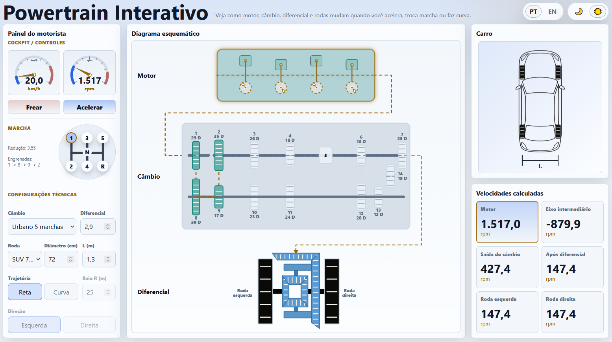
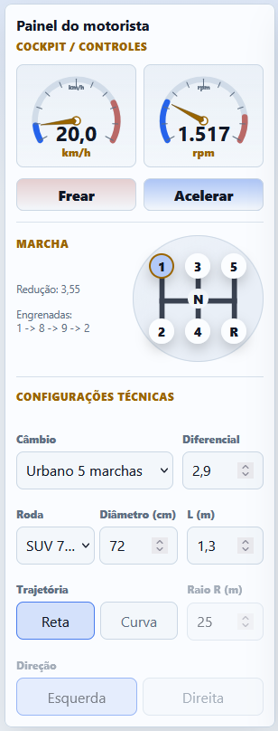
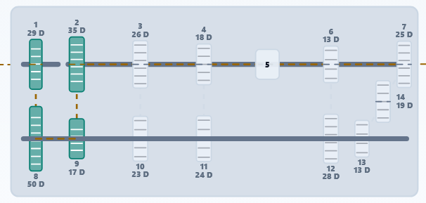
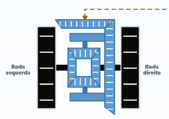
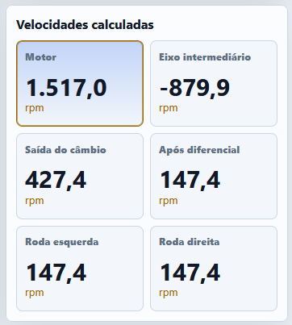
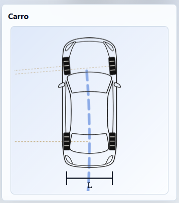
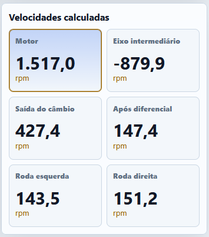

The Mechanical Systems Laboratory (LASME) now has a new didactic resource: Interactive Powertrain. The tool lets the user change vehicle speed, selected gear, differential ratio, wheel diameter, track width and path, then observes the resulting angular speeds along the powertrain.

The tool can be accessed from the LASME page in two languages: Interactive Powertrain in English and Powertrain Interativo in Portuguese. Its main value is to make the transmission path visible: engine, gearbox, differential and wheels are shown together, while the numerical panel reports engine speed, countershaft speed, gearbox output speed, final-drive output speed and wheel speeds.
The following example reproduces the values shown by the page and allows the reader to verify each step by hand. The chosen configuration is the City 5-speed transmission, first gear, final-drive ratio \(2.9\), SUV wheel with diameter \(72\ \mathrm{cm}\), track width \(L = 1.3\ \mathrm{m}\), vehicle speed \(20.0\ \mathrm{km/h}\) and straight-line motion.

Gearbox calculation
For the selected condition, the engine shaft enters the gearbox at approximately \(1517\ \mathrm{rpm}\). In first gear, the engaged path shown by the schematic is \(1 \rightarrow 8 \rightarrow 9 \rightarrow 2\). The tooth counts indicated in the figure are \(N_1 = 29\), \(N_8 = 50\), \(N_9 = 17\) and \(N_2 = 35\).

The gearbox reduction follows the compound gear-train relation:
The countershaft speed is negative because it rotates in the opposite direction to the engine input gear. Its magnitude is obtained from the first pair:
At the gearbox output, the speed is reduced by the first-gear ratio:
Differential and wheels
After leaving the gearbox, the motion passes through the differential. The example uses a final-drive ratio of \(2.9\), so the average wheel speed just after this reduction is:

In straight-line motion, the left and right rear wheels have the same angular speed. Converting \(147.4\ \mathrm{rpm}\) to radians per second:
The wheel radius is \(0.72/2 = 0.36\ \mathrm{m}\). Therefore, the linear speed of the wheel, and consequently of the vehicle, is:

Same vehicle in a turn
Now keep the same vehicle speed, same gear, same wheel diameter and same final-drive ratio, but change the path to a curve with radius \(R_c = 25\ \mathrm{m}\). For a left turn, the left wheel is the inner wheel and the right wheel is the outer wheel.

The angular speed of the vehicle around the center of the curve is:
With \(L = 1.3\ \mathrm{m}\), the distances from the curve center to the left and right wheels are:
The linear speeds of the two wheels are therefore proportional to the radius of each path:
Dividing each linear speed by the wheel radius gives the angular speed of each rear wheel:
The differential receives the average angular speed of the two rear wheels. From the straight-line calculation, the average is already known: \(147.4\ \mathrm{rpm} = 15.44\ \mathrm{rad/s}\). Thus:
With the vehicle speed known, the wheel speeds can be checked:

The example shows how Interactive Powertrain can be used as a bridge between the visual simulator and the equations of mechanical transmissions. The page does not only report a final vehicle speed; it exposes the intermediate speeds that explain how the result is formed from the engine to the ground contact.